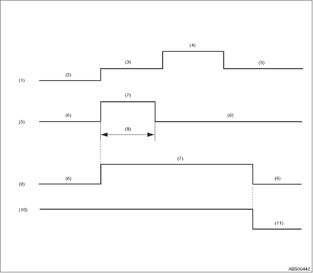

|
(1) |
Ignition switch |
(5) |
ABS warning light |
(9) |
Brake warning light (EBD warning light) |
|
(2) |
OFF |
(6) |
Light OFF |
(10) |
Parking brake |
|
(3) |
ON |
(7) |
Light ON |
(11) |
Released |
|
(4) |
Start |
(8) |
Approx. 2 sec. |
1. When the ABS warning light and brake warning light do not illuminate in accordance with this illumination pattern, it can be thought that there is an electrical problem.
2. When the ABS warning light remains constantly OFF, check the combination meter circuit. 
3. When ABS warning light does not go off, check the combination meter circuit.
4. When the brake warning light does not go off, check the brake warning circuit and the combination meter circuit.
NOTE:
Even though the ABS warning light does not go off after approximately 2 seconds from ABS warning light illumination, the ABS function operates normally when the warning light goes off while driving at approximately 12 km/h (7 MPH). However, the ABS system does not work while the ABS warning light is illuminated.